Studio
Mapping
Autopilot
Audiograph
↶
↷
Open
Save
Save scene…
Save as template…
Remove a template…
Share
MIDI
Tutorial
?
Show output
Select your audio source
540p
720p
1080p
1440p
4K
Detach
+ Layer
Shift+A: add node · F: frame scene · Tab: fullscreen · drag output → input
?
Templates
Random
Reset
−
+
Fit
Export video
Close
Share scene
Close
Audiograph
Pro
Welcome screen
Back to studio
By Vladimir Petković
www.vladimirpetkovic.com
Version 2.0
×

Audio-visualization studio
Start
Tutorial
Don’t show at startup